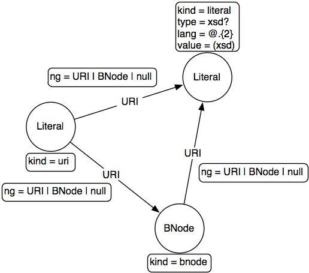

OpenRDF is the creator of the Sail interface (Storage and Inference Layer). Any triple or quad-store developer can implement the Sail interfaces in order to allow third-party developer to work with different stores without having to change their code. This is very handy as different RDF-store implementations are optimized for different types of use cases. In analogy, Sail is like the JDBC of the RDF database world.
The Storage And Inference Layer (Sail) API is a low level System API (SPI) for RDF stores and inferencers. Its purpose is to abstract from the storage and inference details, allowing various types of storage and inference to be used. The Sail API is mainly of interest for those who are developing Sail implementations, for all others it suffices to know how to create and configure one. There are several implementations of the Sail API, for example the MemoryStore which stores RDF data in main memory, and the NativeStore which uses dedicated on-disk data structures for storage. (source OpenRDF Sesame Users Guide)
Many triple and quad-store developers have implemented the Sail interface. Supported implementations are provided below.
<dependency>
<groupId>com.tinkerpop.blueprints</groupId>
<artifactId>blueprints-sail-graph</artifactId>
<version>??</version>
</dependency>Graph graph = new MemoryStoreSailGraph();
Graph graph = new NativeStoreSailGraph("/tmp/nativestore");Graph graph = new LinkedDataSailGraph(new MemoryStoreSailGraph());
Vertex v = graph.getVertex("http://dbpedia.org/resource/Graph_Database");Graph graph = new SparqlRepositorySailGraph("http://dbpedia.org/sparql");Any of these stores can be manipulated with Blueprints through their Sail interfaces. Here is a list of aspects of RDF that should be understood when dealing with Blueprints over an RDF store.
- No duplicate edges: RDF considers two edges the same if they share the same subject, predicate, object, and graph. Thus, edges with these in common are, in fact, the same edge.
- No indices: There are no indices as no elements have properties that can not be accessed simply by using referencing their id (i.e. their URI, blank node, or literal string).
- Infinite vertices: RDF is edge based and as such, every possible vertex exists. It is only when finding outgoing or incoming edges to some vertex do you recognize it within a larger graph structure. For this reason, you can not iterate over all vertices in the graph.

The Resource Description Framework can be modeled as a property graph. Moreover, it is possible to model RDF quads (triples within a named graph) as a property graph. This page articulates the mapping between RDF quads and the property graph model.
Mapping RDF to a Property Graph
An RDF quad statement is denoted by a subject, a predicate, an object, and a named graph (the “spog” model for short). The set of subjects is the set of all Uniform Resource Identifiers (URIs) and blank nodes. The set of predicates is the set of all URIs. The set of objects is the set of all URIs, blank nodes, and literals. Finally, the set of named graphs is the set of all URIs and blank nodes. The following diagram demonstrates how RDF is modeled using the property graph model.

The identifier (id) of a vertex is the string representation of the RDF value that it is modeling/representing. A few examples are provided below:
- URI
http://markorodriguez.comhttp://tinkerpop.com#rippleurn:uuid:aa9d07d7-8ccf-454a-b08a-5e5a8c560154
- Blank Node
_:A12345_:anonymous-node
- Literal
"hello""hello"@en"hello"^^<http://www.w3.org/2001/XMLSchema#string>
All vertices have a kind property (kind) that is either uri, literal, or bnode. Only literal-based vertices have three other vertex properties. Only two of which can be set. These properties are the language (lang), the datatype (type), and the typecasted value (value) of the literal label. Note that in RDF, a literal can have either a language, a datatype, or neither. Never can a literal have both a language and a datatype. The typecasted value is the object created by the casting of the label of the literal by its datatype. In other words the value of "6"^^<http://www.w3.org/2001/XMLSchema#int> is the integer 6.
Finally, an edge in the property graph model represents an RDF statement. The identifier of an edge is the string representation of the RDF statement. Two examples are provided below. One where the RDF statement is a triple and the other where the statement is a quad.
- Statement
(http://tinkerpop.com#marko, http://someontology.com#age, "30"^^<http://www.w3.org/2001/XMLSchema#int>)(http://tinkerpop.com#marko, http://www.w3.org/2002/07/owl#sameAs, http://markorodrigue.com#marko) [http://tinkerpop.com#graph]
Statements can only have a single property. Namely, the named graph property (ng).
The graph diagrammed in GraphML Reader and Writer Library would be represented in an RDF property graph as the following.

SailGraph Feature List
supportsDuplicateEdges: false
supportsSelfLoops: true
supportsSerializableObjectProperty: false
supportsBooleanProperty: false
supportsDoubleProperty: false
supportsFloatProperty: false
supportsIntegerProperty: false
supportsPrimitiveArrayProperty: false
supportsUniformListProperty: false
supportsMixedListProperty: false
supportsLongProperty: false
supportsMapProperty: false
supportsStringProperty: false
ignoresSuppliedIds: false
isPersistent: false
isRDFModel: true
isWrapper: false
supportsIndices: false
supportsVertexIndex: false
supportsEdgeIndex: false
supportsKeyIndices: false
supportsVertexKeyIndex: false
supportsEdgeKeyIndex: false
supportsEdgeIteration: true
supportsVertexIteration: false
supportsTransactions: true
supportsThreadedTransactions: false